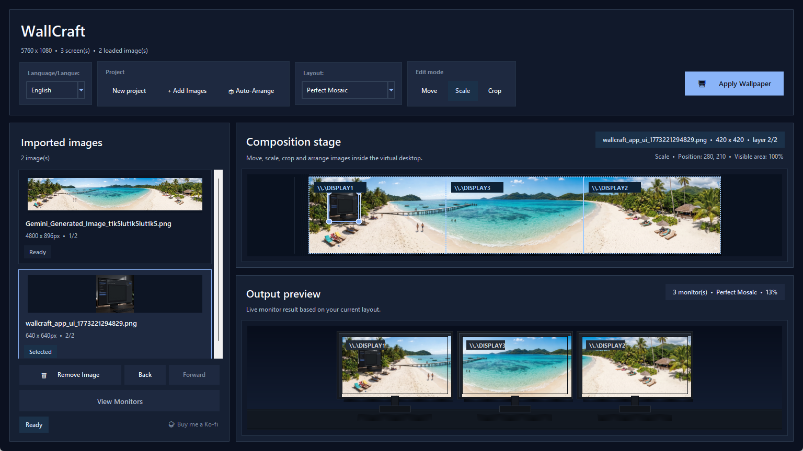
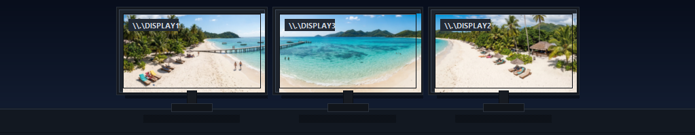

Current Windows download
Get the packaged executable for Windows 10/11 from GitHub.
The website now reflects the 2026.3.14 product refresh. The Windows executable is still distributed through GitHub Releases, with the latest screenshots and feature overview below.
Download the Windows build, inspect the source code, or open GitHub Releases.
Get the packaged executable for Windows 10/11 from GitHub.
Inspect the repository, follow development, or build from source.
Open the public release page and keep an eye on packaged updates.
This refresh is mostly about workflow quality and readability.
The interface now gives more space to the composition stage and removes the old inspector-heavy layout.
Editing is clearer with separate move, scale, and crop modes plus front/back layer controls.
See the refreshed interface before downloading it.

Project actions, layout selection, edit modes, composition stage, and output preview are now better organized.
The output preview now sells the result more clearly and helps validate a composition before applying it.

Dark monitor frames and wider spacing make the preview easier to read at a glance.
Continue with the workflow guide, use cases, or FAQ.
See how WallCraft Pro 2026.3.14 imports images, scales them manually, changes layer order, previews mixed-monitor results, and applies wallpapers on Windows.
Explore WallCraft Pro use cases for dual monitors, triple screens, laptop plus external displays, ultrawide setups, and mixed monitor sizes.
Read the WallCraft Pro FAQ about cropping, mixed monitor sizes, Windows support, split export, open source access, and download state.
Compare WallCraft Pro with Windows personalization, Wallpaper Engine, and DisplayFusion to choose the right tool for static mixed-monitor wallpapers.
Download the current build, test your monitor layout, and keep the GitHub repository nearby for updates and source code.